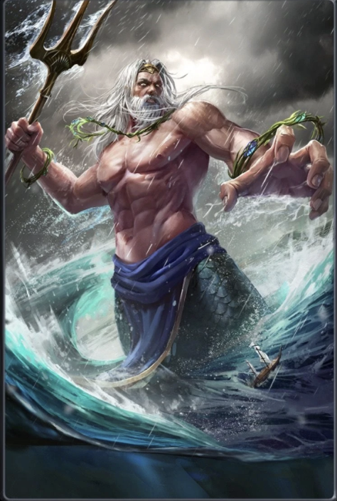

Lorsque Zeusvainquit Cronos et les Titans, le monde fut partagé entre les trois frères.
Zeus reçut le ciel, Hades obtint le monde souterrain, et Poseidon devint maître des mers.
Depuis son palais de corail au fond des océans, Poséidon règne sur les vagues. Armé de son trident, il peut faire jaillir des sources, provoquer des séismes ou soulever d’immenses tempêtes.
On l’appelle aussi l’« Ébranleur de la Terre », car lorsqu’il frappe le sol, la terre tremble.
Les marins le priaient avant chaque voyage, offrant sacrifices et prières pour apaiser sa colère. Car Poséidon est imprévisible : parfois protecteur, parfois terrible.
On raconte qu’il frappa l’Acropole d’Athènes de son trident pour faire surgir une source d’eau salée lors de son affrontement avec Athéna.
Mais la sagesse de la déesse l’emporta, et la cité ne porta pas son nom.
Malgré sa puissance immense, Poséidon demeure souvent dans l’ombre de Zeus, mais nul ne peut ignorer le grondement des vagues lorsque le dieu des mers s’irrite.